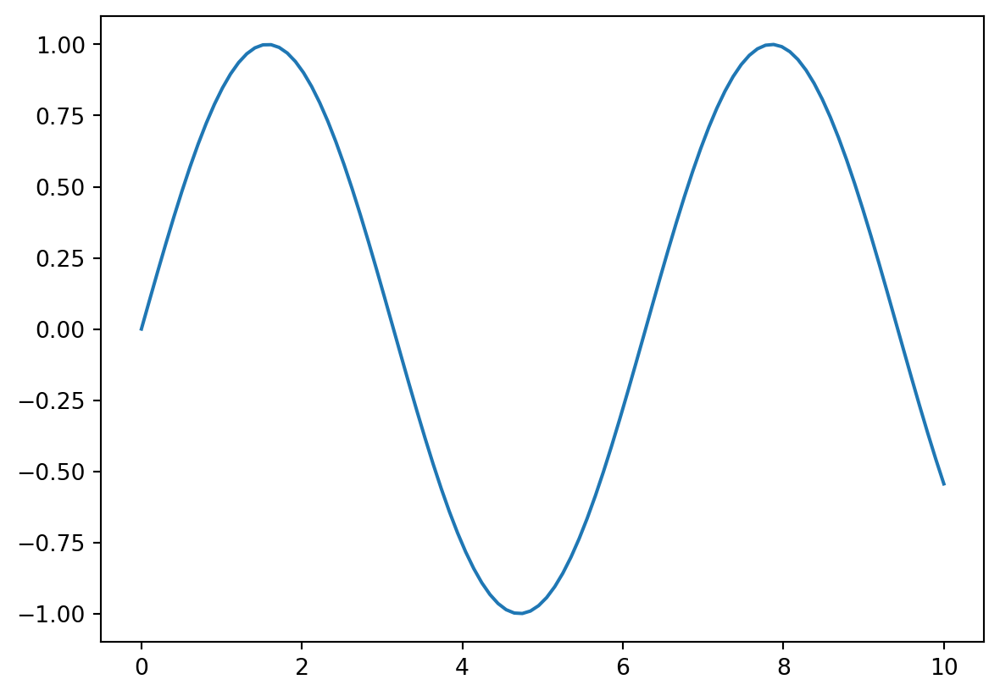

I’ve built a few blogs in the past - this has been the most fun, and it is made with quarto :=)
I also gave a workshop on using quarto - you can find the slides here, it was also made with quarto outputting to reveal.js.
What is Quarto?
Quarto is an open-source scientific and technical publishing system that enables users to create dynamic documents, reports, presentations, and blogs with ease. It supports multiple languages, including R, Python, and Julia, and allows seamless integration of code, text, and visuals in a single document. If you’ve worked with R Markdown before, you’ll find Quarto familiar—it’s the next evolution, designed to be more powerful and language-agnostic.
You can think of it as a framework built on top of pandoc.
Why Use Quarto?
Quarto is built with reproducibility in mind, making it an essential tool for data scientists, researchers, and technical writers. Some key advantages include:
- Multi-language Support: You can write in R, Python, Julia, or Observable JavaScript within the same document.
- Flexible Output Formats: Convert your documents into PDFs, HTML files, Word documents, presentations (Reveal.js, PowerPoint), books, and even interactive dashboards.
- Version Control Friendly: The lightweight plain-text format ensures compatibility with Git and other version control systems.
- Automation & Reproducibility: Quarto makes it easy to automate reports and ensures that results remain consistent every time you run them.
- Seamless Integration with Jupyter and RStudio: Works smoothly with Jupyter notebooks and the RStudio IDE, making it ideal for both Python and R users.
- Dynamic and Interactive Content: Supports embedded code, interactive visualizations, and even Shiny apps.
How to Get Started with Quarto
1. Install Quarto
Before you start, you need to install Quarto. Download the appropriate version for your operating system from Quarto’s official website.
For macOS and Linux users, you can install it via:
brew install --cask quarto # macOS (Homebrew)
sudo apt install quarto # Linux (Debian/Ubuntu)For Windows, use the provided installer.
2. Create a Quarto Document
Once installed, you can create a new Quarto Markdown (.qmd) file. Here’s a simple example:
---
title: "My First Quarto Document"
author: "Your Name"
date: "2025-02-21"
format: html
---
# Introduction
This is my first Quarto document. Below is an embedded code chunk.
::: {#72fe7631 .cell execution_count=1}
``` {.python .cell-code}
import matplotlib.pyplot as plt
import numpy as np
x = np.linspace(0, 10, 100)
y = np.sin(x)
plt.plot(x, y)
plt.show()
:::
Save this as `example.qmd`, then render it using:
```sh
quarto render example.qmdThis generates an HTML file with formatted text and code output.
3. Use Quarto for Blogging
Quarto makes it simple to set up a blog. To create one, run:
quarto create-project my-blog --type website
cd my-blog
quarto previewThis initializes a Quarto blog, allowing you to add .qmd files as posts and render them into a static site.
Conclusion
Quarto is a powerful and flexible tool for reproducible reporting, technical blogging, and scientific publishing. Whether you’re a researcher, data scientist, or technical writer, Quarto streamlines your workflow and enhances collaboration. With its easy integration with multiple languages and diverse output formats, it’s a must-have tool for modern technical writing.
Want to explore more? Check out the Quarto documentation for advanced features and customization options.